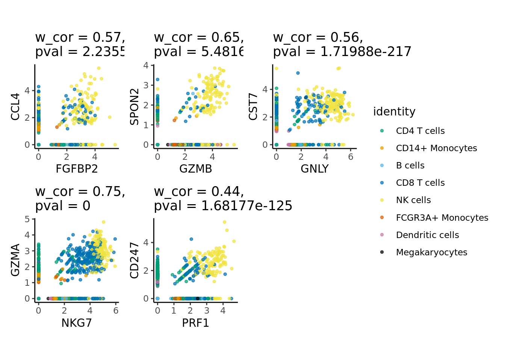
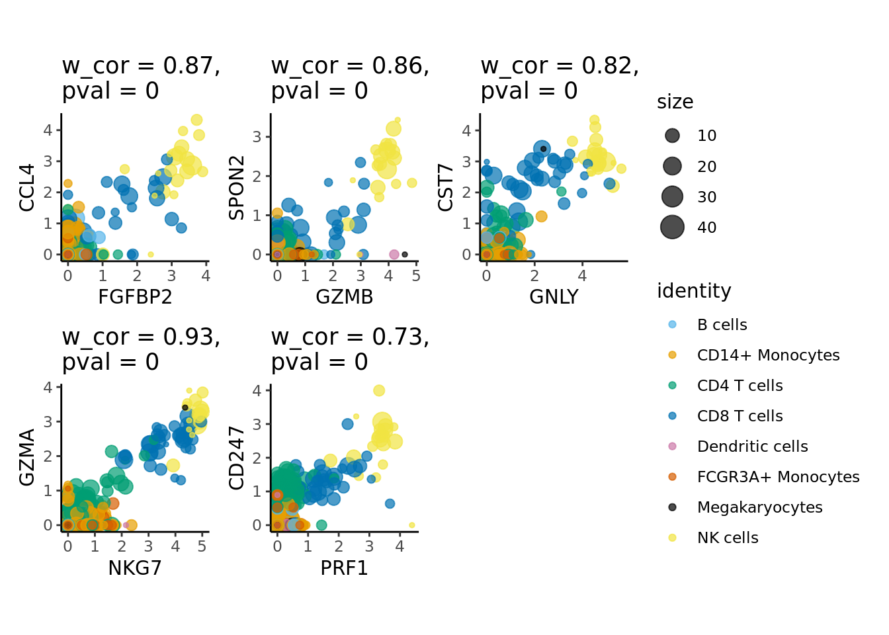

6.1 Standard analysis (R)
In this tutorial, standard analysis includes dimensionality reduction, clustering and differential expression using the Seurat framework.
library(Seurat)
#> Attaching SeuratObject
library(dplyr)
#>
#> Attaching package: 'dplyr'
#> The following objects are masked from 'package:stats':
#>
#> filter, lag
#> The following objects are masked from 'package:base':
#>
#> intersect, setdiff, setequal, union
library(ggplot2)6.1.1 Load metacell Seurat object
We will use Seurat objects containing the metacells counts data and their annotation (e.g. and cell-type annotation) and proceed with standard Seurat downstream analyses. Seurat objects containing metacells counts data and their annotation were generated at the end of sections ….. These objects can also be generated using the command line described in chapter …
MC_tool = "SuperCell"
proj_name = "3k_pbmc"
annotation_column = "louvain"
MC.seurat = readRDS(paste0('./data/', proj_name, '/metacell_', MC_tool,'.rds'))6.1.2 Dimensionality reduction
As for single-cells, we normalize the raw counts (here aggregated raw counts) and we identify the most variable features in the metacells gene expression data. Based on these features, we run PCA and use the first principal components to obtain a two dimensionnal representation of the data using UMAP.
Idents(MC.seurat) <- annotation_column
MC.seurat <- NormalizeData(MC.seurat, normalization.method = "LogNormalize")
MC.seurat <- FindVariableFeatures(MC.seurat, nfeatures = 2000)
MC.seurat <- ScaleData(MC.seurat)
#> Centering and scaling data matrix
MC.seurat <- RunPCA(MC.seurat, verbose = F)
MC.seurat <- RunUMAP(MC.seurat, dims = 1:30, verbose = F)
#> Warning: The default method for RunUMAP has changed from calling Python UMAP via reticulate to the R-native UWOT using the cosine metric
#> To use Python UMAP via reticulate, set umap.method to 'umap-learn' and metric to 'correlation'
#> This message will be shown once per session
DimPlot(MC.seurat, reduction = "umap")
6.1.3 Clustering
We cluster the metacells using Seurat clustering steps and visualize these clusters using UMAP:
MC.seurat <- FindNeighbors(MC.seurat, dims = 1:30)
#> Computing nearest neighbor graph
#> Computing SNN
MC.seurat <- FindClusters(MC.seurat, resolution = 2)
#> Modularity Optimizer version 1.3.0 by Ludo Waltman and Nees Jan van Eck
#>
#> Number of nodes: 106
#> Number of edges: 2637
#>
#> Running Louvain algorithm...
#> Maximum modularity in 10 random starts: 0.1672
#> Number of communities: 6
#> Elapsed time: 0 seconds
#> 1 singletons identified. 5 final clusters.
DimPlot(MC.seurat, reduction = "umap", group.by = "seurat_clusters")
6.1.4 Differential expression analysis
# Set idents to metacell annotation
Idents(MC.seurat) <- annotation_column
levels(MC.seurat) <- sort(levels(Idents(MC.seurat)))
# Compute upregulated genes in group of metacells (versus other metacells)
MC.seurat.all.markers <- FindAllMarkers(
MC.seurat,
only.pos = TRUE,
min.pct = 0.25,
logfc.threshold = 0.25,
test.use = "t"
)
#> Calculating cluster B cells
#> Calculating cluster CD14+ Monocytes
#> Calculating cluster CD4 T cells
#> Calculating cluster CD8 T cells
#> Calculating cluster Dendritic cells
#> Calculating cluster FCGR3A+ Monocytes
#> Calculating cluster Megakaryocytes
#> Calculating cluster NK cellsWe select the top markers for each cell-type:
# Top markers (select top markers of each metacell population)
MC.seurat.top.markers <- MC.seurat.all.markers %>%
group_by(cluster) %>%
slice_max(n = 5, order_by = avg_log2FC)
MC.seurat.top.markers
#> # A tibble: 35 × 7
#> # Groups: cluster [7]
#> p_val avg_log2FC pct.1 pct.2 p_val_adj cluster gene
#> <dbl> <dbl> <dbl> <dbl> <dbl> <fct> <chr>
#> 1 6.34e-11 4.09 1 0.543 2.08e- 6 B cells CD79A
#> 2 3.56e- 5 3.70 1 0.223 1 e+ 0 B cells IGLL5
#> 3 1.60e-12 3.40 1 0.755 5.24e- 8 B cells CD79B
#> 4 3.70e-19 3.36 1 0.606 1.21e-14 B cells MS4A1
#> 5 2.16e- 6 3.12 1 0.383 7.08e- 2 B cells TCL1A
#> 6 1.28e-23 4.79 1 0.79 4.20e-19 CD14+ Monocytes S100A8
#> 7 4.10e-36 4.51 1 0.926 1.34e-31 CD14+ Monocytes S100A9
#> 8 4.35e-42 3.38 1 1 1.42e-37 CD14+ Monocytes LYZ
#> 9 2.36e-38 2.90 1 0.58 7.72e-34 CD14+ Monocytes LGALS2
#> 10 2.26e-19 2.79 1 0.395 7.39e-15 CD14+ Monocytes CD14
#> # ℹ 25 more rowsWe visualize the top 5 markers for the XX cells.
# genes.to.plot <- MC.seurat.top.markers$gene[MC.seurat.top.markers$cluster == unique(MC.seurat@meta.data[,annotation_column])[1]]
genes.to.plot <- MC.seurat.top.markers$gene[c(seq(1, 20, 5))]
VlnPlot(MC.seurat, features = genes.to.plot, ncol = 4, pt.size = 0.0) 
6.1.5 Visualize gene-gene correlation
We can use the supercell_GeneGenePlot function from the SuperCell package to visualize the correlation between marker genes of a cell-type:
(i) at the single-cell level and
(ii) at the metacell level.
For that, we load the single-cell data from which the metacells were derived.
print(proj_name)
#> [1] "3k_pbmc"
sc_data = readRDS(paste0("data/", proj_name, "/singlecell_seurat_filtered.rds"))
sc_data <- NormalizeData(sc_data, normalization.method = "LogNormalize")library(SuperCell)
cell_type_markers <- MC.seurat.top.markers[MC.seurat.top.markers$cluster == "CD8 T cells", ]
gene_x <- cell_type_markers$gene[1:2]
gene_y <- cell_type_markers$gene[3:4]
alpha <- 0.7
p.sc <- supercell_GeneGenePlot(
GetAssayData(sc_data, slot = "data"),
gene_x = gene_x,
gene_y = gene_y,
clusters = sc_data@meta.data[, annotation_column],
sort.by.corr = F,
alpha = alpha
)
p.sc$p
p.MC <- supercell_GeneGenePlot(GetAssayData(MC.seurat, slot = "data"),
gene_x = gene_x,
gene_y = gene_y,
clusters = MC.seurat@meta.data[ ,annotation_column],
sort.by.corr = F,
alpha = alpha)
p.MC$p